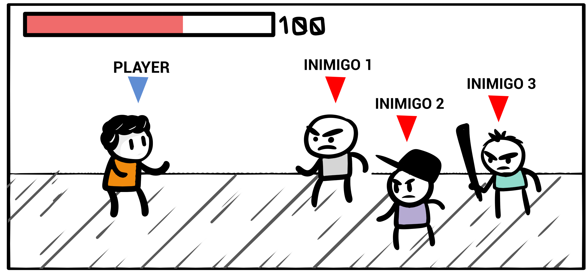
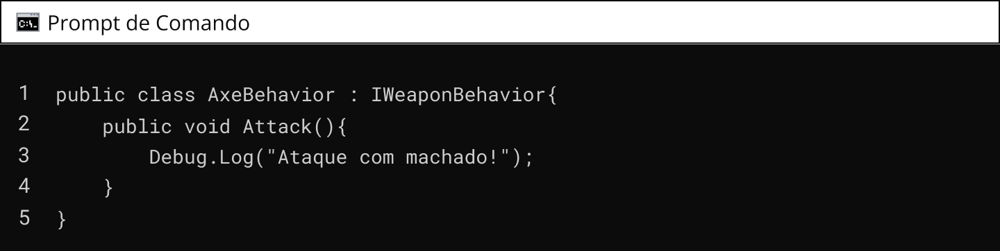

Aplicar padrões de projeto conforme especificações técnicas do projeto.
Vamos iniciar os estudos!
PlayComo aplicar padrões de projeto comportamentais nos jogos digitais?
Padrões de projeto, também conhecidos como design patterns, são soluções comprovadas e reutilizáveis para problemas recorrentes no desenvolvimento de software. No contexto de jogos digitais, existem vários padrões de projeto que podem ajudar a organizar e estruturar o código de maneira eficiente.
O livro "Design Patterns: Elements of Reusable Object-Oriented Software" é um clássico que documenta 23 Padrões de Projeto. Foi escrito pela conhecida "gangue dos 4" é composta por Erich Gamma, Richard Helm, Ralph Johnson e John Vlissides.
Os padrões de projeto de comportamento, no contexto da engenharia de software, são estratégias e abordagens que visam melhorar a interação e comunicação entre os objetos e componentes de um sistema. Eles se concentram nas responsabilidades e nos algoritmos de distribuição de tarefas, permitindo que os desenvolvedores organizem o comportamento das classes e objetos de forma eficaz e flexível. Esses padrões fornecem soluções reutilizáveis para problemas comuns de design de software relacionados ao comportamento, promovendo a modularidade, a manutenibilidade e a escalabilidade de sistemas complexos. Ao entender e aplicar esses padrões, os desenvolvedores podem criar software mais flexível, robusto e de fácil manutenção, economizando tempo e recursos no processo de desenvolvimento.
Nesta aula, abordaremos os padrões de projeto Observer, Strategy e Visitor.
O padrão Observer é utilizado quando se precisa manter os objetos atualizados quando algo importante ocorre.Imagine que você tem um canal no YouTube sobre jogos. Sempre que você posta um vídeo novo, as pessoas que se inscreveram no seu canal recebem uma notificação para assistir ao vídeo. Aqui, o seu canal é como um "jogo", e os inscritos são como "jogadores" que querem saber quando há uma novidade.
No mundo da programação de jogos, muitas vezes precisamos de um sistema parecido. Por exemplo, digamos que você tenha um personagem em um jogo que ganha um ponto de vida toda vez que pega um item de cura. O jogo precisa de uma maneira de avisar o personagem que ele pegou o item e deve aumentar sua vida.
O Padrão de Projeto Observer é como esse sistema de notificações. Ele permite que diferentes partes do seu jogo "assinem" para receber atualizações sobre certos eventos, sem que elas precisem ficar perguntando o tempo todo se algo novo aconteceu. No nosso exemplo, o personagem é o "observador" e o item de cura é o "observável" ou "sujeito". Sempre que o personagem pega o item de cura (o evento), o item avisa (notifica) o personagem para ele atualizar sua vida.
Esse padrão é super útil porque mantém as partes do seu jogo bem independentes e organizadas. Elas não precisam saber como as outras funcionam, apenas precisam saber que vão receber uma notificação quando algo importante acontecer.
Exemplo práticoVocê sabe o que são jogos no estilo “Beat 'em up”? Este é um gênero de jogo que se tornou popular nas décadas de 1980 e 1990, especialmente em fliperamas e consoles domésticos. Nesse tipo de jogo, o jogador assume o controle de um personagem que deve enfrentar hordas de inimigos em combates corpo a corpo intensos.
Nesse estilo, se destacam títulos como: Final Fight, Double Dragon, Streets of Rage.
Em jogos no estilo Beat ‘em up é comum a mecânica que exige que o personagem derrote os inimigos que estão na tela naquele momento, para poder prosseguir na fase. Suponha que você tenha um jogo Beat 'em up com vários inimigos que precisam notificar o personagem principal quando estão derrotados para que o jogador possa avançar para a próxima fase. Vamos usar o padrão Observer para criar uma comunicação entre os inimigos e o personagem principal.
O código a seguir foi todo implementado utilizando a engine Unity, e o editor de código utilizado foi o Visual Studio Code. Primeiro, vamos criar uma classe Subject (Aqui chamaremos PlayerCharacter) que representará o personagem principal e será observada pelos inimigos. Essa classe deve conter métodos para registrar, remover e notificar os observadores.
Cada um desses métodos tem sua importância:
Em seguida, devemos criar uma classe Observer, vamos dar o nome Enemy para representar os inimigos. Essa classe deve implementar um método OnDefeated() que será chamado quando o personagem principal notificar os observadores.
Agora sim, quando um inimigo for derrotado, ele chamará o método NotifyEnemiesDefeated() do personagem principal, que por sua vez notificará todos os observadores (inimigos) registrados. Cada inimigo implementa a ação desejada no método OnDefeated().
Essa implementação permite que o personagem principal seja notificado automaticamente quando todos os inimigos forem derrotados, facilitando a progressão do jogo para a próxima fase.
Em resumo, com o padrão de projetos Observer é possível monitorar o comportamento do objeto Player comunicando todos os personagens inimigos sempre quando o Player sofrer dano e informando a quantidade de pontos de vida no jogo.
O padrão Observer funciona de forma análoga a assinatura de revistas. Ou seja, uma editora envia revistas recém publicadas a todos os assinantes. Enquanto uma pessoa mantém a assinatura da revista, continuará recebendo em sua casa. Caso a pessoa cancele a assinatura da revista, parará de receber as edições futuras.
Os diagramas de classe são ferramentas essenciais no desenvolvimento de software, especialmente quando se trata de implementar padrões de projeto.
Eles funcionam como um mapa, oferecendo uma visão clara da estrutura e do design do sistema antes mesmo de qualquer código ser escrito. Ao visualizar as classes, suas responsabilidades, e como elas interagem entre si, os desenvolvedores podem entender melhor como implementar um padrão de projeto de forma eficaz.
Isso é crucial para garantir que todos na equipe estejam alinhados e compreendam o fluxo de dados e as relações de dependência dentro do aplicativo.
Em padrões como o Observer, por exemplo, um diagrama de classe pode ilustrar claramente a dinâmica entre os sujeitos (como o personagem do jogador) e os observadores (como os inimigos), destacando quem está observando quem e como as notificações são transmitidas. Isso não apenas facilita a comunicação e o planejamento dentro da equipe de desenvolvimento, mas também serve como uma documentação valiosa para referência futura e manutenção do sistema.
O diagrama de classes que representa o padrão Observer pode ser apresentado desta forma:
QUESTÃO 1
Avalie se a afirmação a seguir é verdadeira ou falsa.
O padrão de projeto Observer é enquadrado, quanto ao propósito, na categoria criacional.
No mundo dos jogos de RPG, como Final Fantasy ou Pokémon, escolher a habilidade certa na hora certa é crucial para vencer as batalhas. Essa escolha estratégica é muito parecida com o Padrão de Projeto Strategy na programação. Assim como você seleciona "Flamethrower" ou "Fly" baseado no tipo de adversário que está enfrentando, o Padrão de Projeto Strategy permite que um objeto, como o seu personagem no jogo, mude seu comportamento (ou "estratégia") de acordo com a situação.
No código do jogo, isso significa que você pode ter uma classe Character com uma habilidade que pode ser alterada em tempo de execução, dependendo do inimigo que você está enfrentando. Ao invés de ter uma série de condicionais complexas (if ou switch), você tem classes separadas para cada habilidade, e o personagem simplesmente muda de uma habilidade para outra, assim como você muda de "Flamethrower" para "Fly". Isso torna o código mais flexível e mais fácil de expandir ou modificar exatamente como quando você está ajustando sua estratégia em uma batalha de RPG para enfrentar diferentes tipos de oponentes.
O padrão comportamental Strategy (ou Padrão de Estratégia, em inglês) em jogos digitais é uma técnica de design que permite a troca dinâmica de algoritmos ou estratégias utilizadas em determinados contextos do jogo. É amplamente aplicado em situações em que diferentes comportamentos ou estratégias podem ser alternados durante a execução do jogo.
A adoção do Padrão de Projeto Strategy no desenvolvimento de jogos digitais traz uma série de benefícios que podem tornar o código mais limpo, flexível e fácil de manter:
Flexibilidade de Comportamentos: Permite que objetos tenham comportamentos variáveis que podem ser alterados em tempo de execução, o que é ideal para personagens de jogos com múltiplas habilidades ou estados.
Facilita a Manutenção: Ao separar as estratégias em classes distintas, o código fica mais organizado. Isso significa que adicionar novas estratégias ou modificar as existentes não requer alterações nas classes principais, facilitando a manutenção e a expansão do jogo.
Reuso de Código: Como as estratégias são encapsuladas em suas próprias classes, elas podem ser reutilizadas em diferentes contextos dentro do jogo, evitando duplicação de código e possíveis erros. Princípio da Responsabilidade Única: Cada estratégia tem uma única responsabilidade, o que alinha o design do software ao Princípio da Responsabilidade Única, melhorando a qualidade do código.
Testabilidade: Com estratégias claramente definidas e separadas, torna-se mais fácil escrever testes automatizados para cada comportamento, garantindo que mudanças no jogo não quebrem funcionalidades existentes.
Esses benefícios contribuem para um desenvolvimento mais ágil e uma base de código que pode se adaptar rapidamente às mudanças, seja para introduzir novos tipos de inimigos, habilidades ou regras de jogo, mantendo a integridade e a robustez do sistema como um todo.
Exemplo prático
Donkey Kong Country, o icônico jogo do Super Nintendo, apresenta um elemento de design de jogo que se alinha perfeitamente com o Padrão de Projeto Strategy: a capacidade de utilizar diferentes animais aliados, cada um com habilidades únicas.
Assim como no padrão Strategy, onde um objeto pode alterar seu comportamento escolhendo entre uma família de algoritmos, os jogadores de Donkey Kong Country podem mudar a estratégia de jogo ao libertar animais de suas caixas.
Cada animal aliado funciona como uma estratégia diferente que o jogador pode adotar temporariamente, oferecendo novas formas de interagir com o jogo e superar obstáculos. Isso reflete a essência do padrão Strategy: a habilidade de mudar dinamicamente o comportamento de um objeto - neste caso, a forma como o jogador avança pelo jogo - proporcionando uma experiência rica e variada.
Para o exemplo da nossa aula, vamos supor o seguinte cenário: imagine que em um jogo de aventura, o nosso personagem possa usar diversas armas, uma espada, um machado, uma corrente, etc. Você percebe que cada uma dessas armas tem comportamentos diferentes? Tanto de manuseio, quanto de danos? Assim, vamos implementar um código no qual o padrão Strategy vai nos ajudar a usar essas armas em momentos alternados.
Vamos para o código:
Primeiro criamos uma interface de nome IWeaponBehavior que conta com o método Attack().
A seguir, vamos implementar duas classes concretas para os comportamentos de duas armas, uma espada e um machado. Cada uma implementando a interface IWeaponBehavior.
A classe Character representa um personagem no jogo e possui um método SetWeaponBehavior() para definir o comportamento da arma e um método Attack() para realizar o ataque com a arma atual.
Por fim, para testar a implementação do Padrão Strategy, vamos implementar a classe Game. Em seu método Start(), criamos uma instância do personagem (Character) e em seu método Update(), usamos condicionais para que, caso o jogador acione o botão S, será realizado o ataque com a espada, caso acione o botão A, realiza o ataque com o machado.
Viu como foi interessante implementar a proposta do Design ao desenvolver uma classe capaz de ter muitos comportamentos?
QUESTÃO 2
Avalie se a afirmação a seguir é verdadeira ou falsa.
O Padrão Strategy permite que um objeto mude seu comportamento em tempo de execução, escolhendo entre diferentes algoritmos ou estratégias.
O Padrão de Projeto Visitor é uma técnica que permite adicionar novas operações a objetos sem modificar suas classes, o que é particularmente útil no desenvolvimento de jogos digitais, onde a capacidade de estender funcionalidades sem alterar o código existente é valiosa. Ao aplicar o Visitor, podemos criar operações externas que "visitam" componentes do jogo - como personagens, itens ou níveis - e executam ações específicas, como atualizações de status, coleta de estatísticas ou aplicação de efeitos. Isso é especialmente vantajoso em jogos complexos, onde diferentes entidades podem necessitar de uma variedade de interações sem que haja uma intrincada teia de dependências ou uma sobrecarga de subclasses com comportamentos específicos. O Visitor nos permite manter o código do jogo limpo e maleável, facilitando a manutenção e a expansão do jogo ao longo do tempo.
Imagine que você está jogando um jogo de RPG. No seu time, você tem diferentes tipos de personagens, como guerreiros, magos e clérigos. Agora, digamos que um poderoso feiticeiro chamado "Visitor" chega e tem a habilidade de dar superpoderes aos seus personagens.
Mas aqui está a parte legal: o "Visitor" dá um superpoder diferente para cada tipo de personagem. Ele dá ao guerreiro uma super espada, ao mago um feitiço poderoso e ao clérigo o dom de invocar antigos encantamentos. O "Visitor" sabe exatamente que superpoder dar para cada personagem.
No mundo da programação, esse é o padrão "Visitor". Ele é como o artefato que visita seus objetos e executa alguma operação neles. A operação pode ser diferente dependendo do tipo do objeto, assim como os superpoderes são diferentes para cada tipo de personagem.
Então, da próxima vez que você estiver jogando um RPG e um personagem estranho aparecer dando superpoderes, lembre-se: isso é bem parecido com o padrão "Visitor" na programação!
Você acabou de entender que o padrão de projeto Visitor pode ser usado em jogos digitais para implementar interações complexas entre objetos do jogo. Por exemplo, em jogos de RPG em que existem diferentes tipos de personagens (como heróis, monstros, NPCs), o Visitor pode ser usado para implementar ações específicas de interação entre os personagens. Cada tipo de personagem pode aceitar um visitante correspondente, como um visitante de "atacar", "conversar" ou "negociar", que executa a ação apropriada. Isso permite que os personagens interajam de maneira dinâmica, adicionando novas interações sem modificar a estrutura dos personagens. O padrão Visitor ajuda a organizar as interações complexas entre os personagens, tornando o código mais modular e flexível.
Vamos fazer uma implementação do padrão Visitor na engine Unity?
Primeiro devemos criar a interface IVisitor que define os métodos Visit() para cada tipo de visitante (ação) no jogo.
Em seguida, temos a classe abstrata Personagem, que representa a classe base para os elementos visitáveis (personagens) no jogo.
Então, cada personagem (Hero, Monster, NPC) implementa o método Accept(), que permite que um visitante seja aceito e chame o método de visita correspondente.
Agora, vamos criar uma implementação concreta do visitante (ação), chamaremos essa classe de ActionVisitor, ela possui os métodos de visita específicos para cada tipo de personagem. No exemplo, temos a visita de "atacar" implementada para o herói e o monstro, para o NPC, a ação definida é “negociar”.
Na classe Game, no método Start(), devemos criar instâncias dos personagens (hero, monster, npc) e do visitante (ActionVisitor). Em seguida, chamamos o método Accept() em cada personagem, passando o visitante como parâmetro. Isso permite que cada personagem execute a ação apropriada definida pelo visitante.
Percebeu como o padrão Visitor permite implementar ações específicas de interação entre os personagens de forma flexível e modular. É possível adicionar novos visitantes (ações) e personagens sem modificar a estrutura existente, promovendo a extensibilidade e a organização das interações no jogo.
O Padrão de projeto Visitor pode ser representado pelo diagrama:
QUESTÃO 3
Avalie se a afirmação a seguir é verdadeira ou falsa.
O Padrão Visitor permite que uma nova operação seja executada em um grupo de objetos, sem que esses objetos precisem ser modificados.
Imagine que você está jogando um jogo de equipe online, como o Fortnite ou o League of Legends. Nesses jogos, a comunicação é super importante, certo? Agora, imagine se cada jogador tivesse que falar diretamente com todos os outros jogadores o tempo todo. Seria uma bagunça total!
É aí que entra o "Mediator", ou em português, o "Mediador". No mundo dos games, o Mediador seria como o chat do jogo ou o sistema de voz. Em vez de todos falarem diretamente uns com os outros, eles falam através do chat. O chat recebe as mensagens e as envia para os jogadores certos. Isso torna a comunicação muito mais organizada.
Em programação, o Padrão Mediator faz algo parecido. Ele ajuda a organizar a comunicação entre diferentes partes do código, para que elas não tenham que se comunicar diretamente umas com as outras. Isso torna o código mais fácil de entender e de manter. Para esta aula vamos, pensar em um jogo multiplayer online, o Mediator pode ser usado para coordenar a comunicação entre os jogadores. Este, gerencia a troca de informações, como movimento, ações e mensagens entre os jogadores, garantindo que as ações de um jogador sejam refletidas nos outros e sincronizadas adequadamente.
Primeiro, devemos escrever a classe GameMediator que age como o mediador central entre os jogadores. Ele registra os jogadores e permite notificar eventos, como movimentos, ataques, mensagens, entre outros.

A seguir, criaremos a classe Player, esta representa o jogador no jogo. Durante a inicialização, o jogador é registrado no mediador, que permite que outros jogadores ou sistemas notifiquem o jogador de eventos relevantes. No exemplo, temos um método MoveTo que simula o movimento do jogador para uma nova posição.
Na classe Game, durante o início do jogo, é obtida uma referência ao GameMediator. Os jogadores são criados e inicializados com seus respectivos IDs e o mediador.
No exemplo de implementação dentro do método Update, quando as teclas A ou D são pressionadas, o método NotifyMovement do mediador é chamado, notificando o movimento do jogador de ID 1 para a direita ou para a esquerda.
Em resumo, o padrão Mediator resolve o problema de acoplamento excessivo, promovendo a comunicação indireta e centralizada entre objetos, reduzindo a dependência direta e melhorando a capacidade de manutenção e a flexibilidade do sistema.
Em programação, o acoplamento refere-se à forma como os diferentes componentes ou partes de um programa estão interligados e dependem uns dos outros. Um bom design de software busca reduzir o acoplamento, tornando o código mais flexível, legível e fácil de manter.
QUESTÃO 4
Qual das seguintes afirmações sobre o padrão de projetos Mediator é verdadeira?
Os padrões de projeto são técnicas de programação que proporcionam soluções para problemas comuns no desenvolvimento de software. Os padrões comportamentais, particularmente, caracterizam-se por meios de solucionar questões que envolvem a interação e responsabilidade entre objetos e classes. Nesta aula, você conheceu três desses padrões, observer, strategy e visitor.